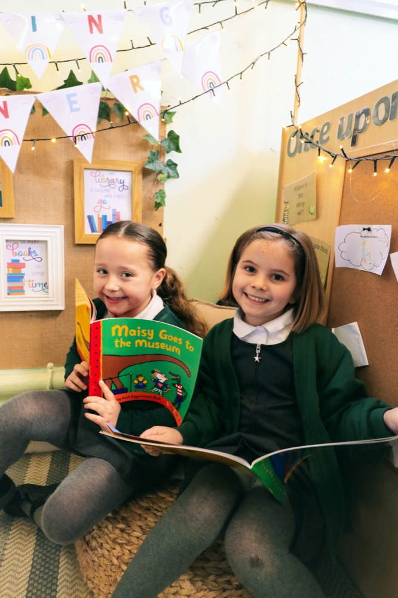
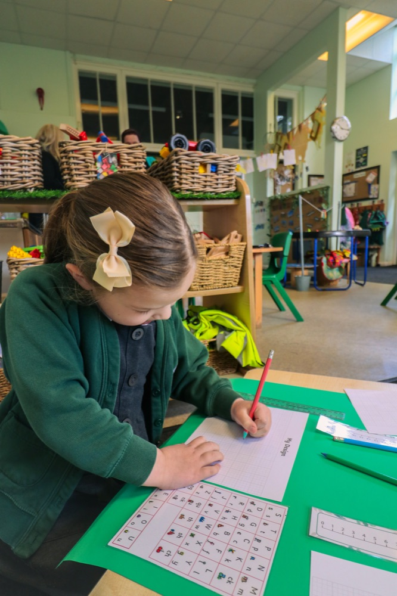

Village Heritage
1837
Listed school building, fields & woodland
A warm, nurturing rural primary school in the heart of Wentworth, South Yorkshire — housed in our historic listed village building with a woodland forest area, library, and immersive learning hall.

Part of White Woods Primary Academy Trust, combining nearly two centuries of village heritage with an ambitious, enquiry-led curriculum.
“At Wentworth, we are proud of our wonderful children, supportive families and dedicated staff, who work together to make our school a happy, caring and inspiring place to learn.”
Immersed in our Christian vision of rooted in community, working with hope, leading with love, we nurture a welcoming and inclusive environment where every child is valued and encouraged to flourish.
We are committed to providing a high-quality education that develops children’s knowledge, skills and character, preparing them for life in an ever-changing world. A website can never fully capture the warmth of our school community, and we would be delighted to welcome you in person.

At Wentworth, we nurture a compassionate community where everyone flourishes, rooted in a Christian environment that reflects God’s love and purpose for us all.
In the Spirit of Christ we take responsibility for our learning, our choices, and caring for our community.
Reflecting a God who is Trinity, we collaborate warmly, listen kindly, and support one another to succeed.
Creating an education in wisdom, we pause to wonder, ask curious questions, and reflect on how we grow.
Through challenges, in hope, we show courage and perseverance — embracing mistakes as stepping stones.
Like the God who is creator, we think creatively, adapt thoughtfully, and use every tool around us well.
Loving neighbour as oneself, we nurture deep respect for every person, our village heritage, and our world.
Fast access to everyday parent portals, school meals, uniform, statutory policies, and upcoming school dates.
Attendance, school communications, trip consents, and parent consultations.
Nutritious daily hot lunches served 12:00–1:00pm via Dolce catering.
Daily Little Wandle phonics in EYFS/Y1 plus digital home reading logs.
7:45am Breakfast (£5), Mon–Fri Clubs (£5) & wraparound to 5:30pm (+£3).
Named after the trees surrounding our Wentworth village grounds — up-to-date class teams, curriculum focus, and daily wraparound timetable.
A joyful, nurturing start to school life. Elm Class builds early confidence, curiosity, and a lifelong love of books through daily Little Wandle Phonics, continuous provision, outdoor woodland exploration, and home reading shared via Boom Reader.
Children finish slightly earlier at 3:20pm for calm handover with families, and have full access to Breakfast Club and After School Clubs.
Building strong foundations in fluency, early writing, and mathematical reasoning through our bespoke White Rose Maths offer and daily reading sessions. Beech children enjoy hands-on enquiry projects, Tribe Time, and rich local visits including Graves Park.
Encouraging independent thinking, creative writing, and deep curiosity across Science, History, Geography, Art, DT, Music, MFL, and Computing. Willow pupils take active roles across our Pupil Leadership groups and Tribe Time.
Preparing confident, resilient, and compassionate young leaders for secondary school and beyond. Birch pupils mentor younger peers, apply for Pupil Leader roles via speeches and letters, and thrive across an ambitious, broad curriculum.
A dedicated village school team working in close partnership with families and our Local Governing Body.
Appointed January 2025, leading Wentworth’s Christian vision, inclusive SEND provision, and whole-school safeguarding.
Leads Birch Class (Y5/6), supports school leadership, and serves as Deputy Designated Safeguarding Lead.
Welcomes our youngest learners into Reception with daily Little Wandle Phonics and rich early years exploration.
Supports Elm Class and champions pupils’ wellbeing, emotional resilience, and pastoral care across school.
Guides Year 1 and Year 2 pupils as they grow into fluent readers, confident writers, and curious mathematicians.
Works closely with Beech Class learners to deliver engaging interventions and nurturing classroom support.
Inspires Lower Key Stage 2 pupils through enquiry-led projects, creative writing, and collaborative learning.
First point of contact for all family enquiries, admissions guidance, and day-to-day school communications.
Parent Governor chairing Wentworth’s Local Governing Body alongside Rev. Marie Raffay and community governors.